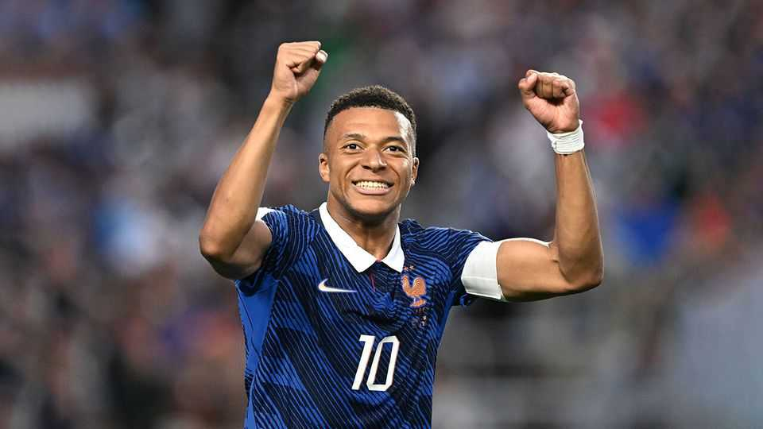

Messi, Mbappé, Ronaldo: this World Cup belongs to the superstars
Notes on talent management from a star-dominated tournament
July 2nd 2026

They freeze. They see red. They quail in the face of history and sky a penalty kick. Sometimes the best footballers flop at World Cups. On the grandest stage they can turn out not to be the best after all, champions of hype rather than talent. Not in 2026: this competition has been dominated by the sport’s titans. Their performance offers lessons for the management of superstars—and a glimmer of cosmic justice.
Lionel Messi, Argentina’s idol, scored six times in three games to claim the record for lifetime goals in World Cups. By July 1st graceful Kylian Mbappé of France (pictured) had netted six too; Norway’s rampaging Erling Haaland had struck five, and Vinícius Júnior, a Brazilian livewire, four. At 41, Cristiano Ronaldo of Portugal became the only man ever to score in six tournaments.
By no means is such a showing inevitable. For one thing, some leading players never get to the World Cup, because their nations fail to qualify for it. This was the fate of George Best of Northern Ireland (who became a notorious playboy) and George Weah (who became president of Liberia). Or the luminaries may be eclipsed by unsung journeymen, who reach heights not touched before or again, or by breakout tyros. Aged 17, Pelé was unknown outside Brazil before the World Cup of 1958. In the final he flicked the ball over a Swede’s head and sweetly volleyed it home.
Pelé also exemplifies a nastier reason why stars can sputter: because they are violently nobbled. In 1966 he was scythed down by a defender, rose gamely but was floored again; he hobbled around pitifully on one leg for the rest of the match. (In 1986 opponents tried to do a number on Diego Maradona, fouling the Argentine more than any player in World Cup history. It didn’t work.)
More relevantly to other businesses, sometimes even megastars crumble under the event’s pressure. Indeed, the burden of megastardom may be why they do so. A few commit rush-of-blood transgressions, like Frank Rijkaard, a Dutchman who in 1990 spat in a German striker’s perm. In 1998 the original Ronaldo, a Brazilian prodigy, came unstuck in a scarier way, suffering a convulsive fit before the final.
Pressure is most personal and acute in penalty shoot-outs. In 2009 Geir Jordet of the Norwegian School of Sports Sciences found that star players were more likely to miss than less glitzy ones, presumably because of the weight of expectation. (That effect seems to have waned since, the big egos having apparently worked on their penalty routines.) Entire teams can suffer these celebrity yips. English squads are cheered off to World Cups like knights errant bound to recover a lost glory. For 60 years they have reached for the sword in the stone, tripped and banged their heads.
Why, this time, have so many marquee names given box-office turns? A lesson for managers of all kinds of teams is that these ones are engineered to optimise their chief assets. This does not always happen: heroes of club football can flounder in national sides that have not been drilled to make the most of their skills. At this World Cup, Argentina’s strategy is to thread the ball to Mr Messi in the vicinity of the goal. Cristiano Ronaldo has spells trundling around the field like a footballing El Cid, but is still the focal point of Portugal’s attack.
Another transferable tip is that the aces are free to concentrate on what they do best—ie, score goals. Just as wise corporate executives exempt rainmakers from paperwork, these players are mostly not expected to do much defending. Less illustrious but extremely proficient colleagues handle that: the maestros thrive because their teams are good, too.
Next, their coaches are conspicuously loyal to the main men. For instance, Didier Deschamps, France’s manager, has rebuffed criticism of Mr Mbappé over his perceived reluctance to sprint backwards in games as well as forwards. Having such stalwart back-up, from the boss as well as colleagues on the pitch, ameliorates the strain of embodying a country’s hopes. If you want your stars to shine, runs the take-home, do your utmost to make them feel like stars.
Those are the action points. But the feats of Messrs Mbappé, Messi and the rest are also edifying in a moral sense. A common view of stardom (not just in football) is that it is a matter of luck, timing, marketing and nice hair as much as ability. “Success = talent + luck,” wrote Daniel Kahneman, a psychologist. “Great success = a little more talent + a lot of luck.” In other words, life is unfair. This World Cup rebuts that jaundiced view. Here, at least, the hype is justified. ■
For more on the latest books, films, TV shows, albums and controversies, sign up to Plot Twist, our weekly subscriber-only newsletter